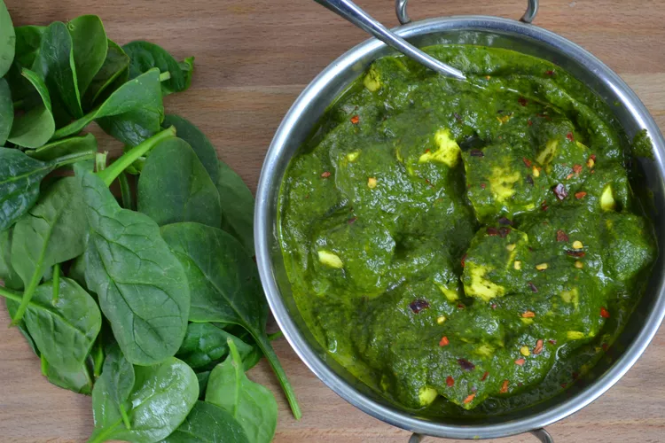

Palak Paneer

Description
Palak Paneer is one of the most popular Indian dish made with succulent Paneer cubes (Indian cottage cheese) in a smooth spinach sauce. I share two ways to make this healthy dish – a homestyle version and a restaurant style version with a charcoal smoking method.Both the vibrant green palak paneer recipes are made with fresh spinach leaves, aromatics, herbs and spices.
Ingredients
- Spinach
- Canola Oil
- Cumin seeds
- Green chile pepper
- Onion
- Garlic
- Ginger
- Tomatoes
- Coriender powder
- Cumin powder
- Red chile powder
- Turmeric powder
- Paneer
- Heavy cream
Steps
- Bring a saucepan of water to a boil. Add spinach and cook for 1 minute. Transfer to a bowl of ice water to keep spinach bright green.
- Heat 2 tablespoons oil in a skillet over medium heat. Add cumin seeds to hot oil so they sizzle. Add onion, chile, garlic, and ginger. Cook until onion is golden brown, 3 to 5 minutes. Add tomatoes and cook until soft, about 2 minutes more. Remove from heat and allow mixture to cool.
- Transfer tomato mixture to a blender; add blanched spinach. Blend to a thick, smooth paste; thin with a few teaspoons water if needed.
- Heat remaining oil in the skillet over medium heat. Add coriander, cumin, chile powder, and turmeric. Fry until fragrant, about 1 minute. Add spinach paste and cook over medium-high heat for 2 minutes. Add water and cook for 5 minutes more. Season gravy with salt.
- Add paneer to the gravy and mix well to coat. Cook 5 minutes more. Add garam masala and cream. Stir and cook over low heat for 2 minutes. Garnish with chile flakes.
Please note differences in ingredient amounts when following the magazine version of this recipe. The magazine version is served with hot basmati rice.